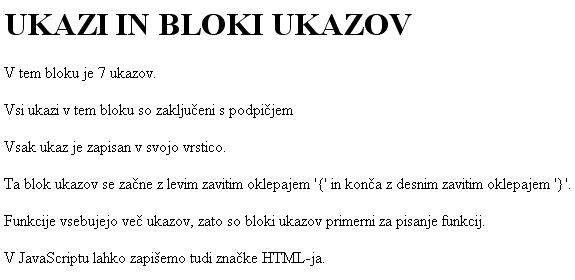

Ne prièakuj razgovora z mrtvim in ne prièakuj dobrih del od skopuha. (Sokrat)
 Slika 1 in 2: Blok ukazov - koda in videz spletne strani 1. Izdelaj spletno stran, ki bo izgledala tako, kot kažeta sliki 1 in 2. Datoteko poimenuj "07apriimek.html". Ne pozabi na konènico ".html". POZOR: Najprej NATANÈNO izdelaj vajo v tej uèni enoti in jo pokaži profesorju, nato zapiši odgovore na spodnja vprašanja. 2. V kodo primera v tej uèni enoti vstavi spodaj navedene komentarje na ustrezna mesta, ki jih ti komentarji pojasnjujejo. //Zakljuèna znaèka skripta. //Zakljuèna znaèka telesa HTML dokumenta. //Izpisani stavek, ki opisuje vlogo podpièja v JavaScriptu. //Izpisani stavek, ki opisuje vlogo zavitih oklepajev v JavaScriptu. //Izpisani stavek, ki opisuje vlogo blokov ukazov v JavaScriptu. 3. Kodo primera v tej uèni enoti spremeni tako, da bo na koncu izpisanih stavkov na spletni strani v novi vrstici izpisan še en stavek. Vsebino tega stavka izberi sam/a. 1. Vprašanja za usmerjanje pozornosti in usvajanje novih besed: 1. Kako oznaèimo konec ukaza v JavaScriptu? 2. Kako imenujemo skupine ali zaporedja ukazov JavaScripta? 3. Kako oznaèimo zaèetek in konec bloka ukazov JavaScripta? 4. V katerih primerih so bloki ukazov še posebej primerni? 5. Koliko ukazov zapišemo po priporoèilih v eno vrstico? 2. Zapiši od ene do pet kljuènih besed, ki povzemajo vsebino te uène enote. 3. Vprašanja za razmislek in povezovanje z lastno izkušnjo: 1. Kateri ukaz JavaScripta je uporabljen v primeru na slikah v tej uèni enoti? 2. Katere znaèke HTML so v primeru na slikah te uène enote zapisane s pomoèjo skripta? 3. Koliko ukazov JavaScripta ali vrstic vsebuje blok ukazov v primeru na slikah te uène enote? 4. Ali gre v primeru te uène enote za zunanji ali za notranji skript? 5. Kaj je argument ukazov v bloku ukazov v primeru na slikah te uène enote? 4. Domaèa naloga: 1. V zvezek prepiši misel, ki je zapisana na zaèetku uène enote z rdeèimi èrkami. Zabeleži nekaj lastnih misli, ki se ti utrnejo ob razmišljanju o njej. 2. Odgovori na vprašanja, na katere nisi uspel/a odgovoriti v šoli. 5. DODATNO DELO: 1. Izdelaj spletno stran, ki bo izgledala tako, kot kažeta sliki 1 in 2. HTML datoteko poimenuj "07bpriimek.html". Argumenti ukazov v bloku naj bodo imena in priimki tvojih najboljših prijateljev in dobrih znancev. |